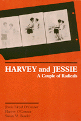

<body bgcolor="#FFFFFF" text="#000000" link="#0000FF" vlink="#CC0000" alink="#CC0000"><center><hr width="350" size="1" align="center" noshade>An engaging memoir records the lives of two journalists chronicles twentieth-century American radicalism<hr width="350" size="1" align="center" noshade><p><a href="https://cdcshoppingcart.uchicago.edu/Cart/ChicagoBook.aspx?ISBN=9780877225195&&PRESS=temple" target="_top">Buy this book!</a> | <a href="https://cdcshoppingcart.uchicago.edu/Cart/Cart.aspx?PRESS=temple" target="_top">View Cart</a> | <a href="https://cdcshoppingcart.uchicago.edu/Cart/Cart.aspx?PRESS=temple" target="_top">Check Out</a></p><p></p></center><!--none//--><h1>Harvey and Jessie</h1>
<H2>A Couple of Radicals</H2>
<h3>Jessie Lloyd O'Connor, Harvey O'Connor and Susan M. Bowler</h3>
<P>cloth 0-87722-519-2 $34.95, Apr 88, <FONT COLOR=#990033>Out of Stock Unavailable</FONT>
<br>paper 0-87722-659-8 $16.95, May 89, <FONT COLOR=#990033>Out of Print</FONT>
<BR> 278 pp
</P><BLOCKQUOTE><I>"This joint autobiography offers vivid first-hand reportage of numerous political events.... The duo's best moments occurred during the McCarthy era when they...challenged the House Committee on Un-American Activities."</I>
<br>&#151<b><I>Publishers Weekly</I></b><I></I></BLOCKQUOTE>
<p>This engaging memoir records the lives of two radical journalists who shared commitments to socialism, the labor movement, civil rights movement, peace movement, and to each other. The story of their long partnership chronicles twentieth-century American radicalism in a very personal and evocative way.
<p>Harvey O’Connor, a devoted socialist and Wobbly, was the Eastern Bureau manager of the Federated Press, a labor news service, when he met Jessie Lloyd in 1929. The granddaughter of Henry Demarest Lloyd, the nineteenth century social reformer, and Chicago Tribune heiress, she was, at 25, already a labor journalist of some repute, having been a reporter in Geneva and Russia after graduating from Smith College. Harvey hired her, and they were married in 1930. Their working relationship and their marriage lasted more than half a century.
<p>With the publication of his critically acclaimed book <I>Mellon’s Millions</I>, Harvey established his reputation for muckraking exposes. With their continued participation in leftist causes, their home became a meeting place for reformers, liberals, and radicals of various persuasions. Despite different backgrounds&#151Harvey’s proletarian radicalism and Jessie’s left-pacifist bourgeois family&#151they valued a variety of radical traditions. Their writing depicts the conflict, challenges, and quarrels that they faced but does not become mired in theoretical sectarian debates.
<p>This dual autobiography vividly describes major episodes in twentieth-century American and world history&#151the Seattle General Strike, Russia in the 1930s and 40s, the Gastonia strike, steel organizing in the Pittsburgh area and in the early days of the C.I.O., McCarthyism&#151in the words of people who, as writers and public personalities, figured prominently in these events.
<BR>&nbsp;<h2>Reviews</h2>
<p><I>"Wobblies in the Northwest woods, the 1919 Seattle General Strike, Pittsburgh and the MelIons, the Soviet Union, even Cuba and Central America: Jessie and Harvey O’Connor have covered them all as crusading socialist labor journalists. For the general reader curious about labor, the left, journalism, dual careers, and social history.</I>
<br>&#151<b><I>Library Journal</I></b>
<p><I>"A marvelous joint autobiography of 'a couple of radicals' engaged in some memorable workers’ struggles of this century Their account of individual experiences and shared history contains much value for today’s militants of all ages. Their story should not be passed up."</I>
<br>&#151<b><I>The Guardian</I></b>
<p><I>"This story, rich in anecdotes deftly winnowed by historian-editor Susan M. Bowler is a big help. Through Harvey and Jessie, we glimpse the Complete American Radical without protective coloration, and we realize that all forecasts of the critter’s demise have been greatly exaggerated."</I>
<br>&#151<b>Paul Buhle</b>, <I>In These Times</I>
<p><I>"I cannot think of two Americans who have led more worthwhile lives than Harvey and Jessie O’Connor. Their story is really a saga of dissenters in the best American tradition."</I>
<br>&#151<b>Studs Terkel</b>
<p><I>"Anyone who knows these two extraordinary people can only marvel at their long lives so continually involved in the events of the day. Malvina Reynolds wrote a song about the ‘Good Ship O’Connor’&#151and, in a real sense, through this book it will sail forever."</I>
<br>&#151<b>Pete Seeger</b>
<BR>&nbsp;<H2>About the Author(s)</H2>
<P><b>Susan M. Bowler</b> is a freelance writer.</P>
<BR><H2>Subject Categories</H2>
<p><A HREF="/tempress/american.html" TARGET="_top">American Studies</a>
<BR><A HREF="/tempress/biography.html" TARGET="_top">Biography/Memoir/Autobiography</a>
</p>
<p align="center"><a href="https://cdcshoppingcart.uchicago.edu/Cart/ChicagoBook.aspx?ISBN=9780877225195&&PRESS=temple" target="_top">Buy this book!</a> | <a href="https://cdcshoppingcart.uchicago.edu/Cart/Cart.aspx?PRESS=temple" target="_top">View Cart</a> | <a href="https://cdcshoppingcart.uchicago.edu/Cart/Cart.aspx?PRESS=temple" target="_top">Check Out</a></p><p><font face="Arial" size="1"><a href="copyright.html" onMouseOver="window.status='Web Copyright Policy';return true;" onMouseOut="window.status=''" title="Web Copyright Policy">&copy;</a> 2015 <a href="http://www.temple.edu" target="new" onMouseOver="window.status='Link to Temple University home page';return true;" onMouseOut="window.status=''" title="Link to Temple University home page">Temple University</a>. All Rights Reserved. http://www.temple.edu/tempress/titles/545_reg.html</font></p>